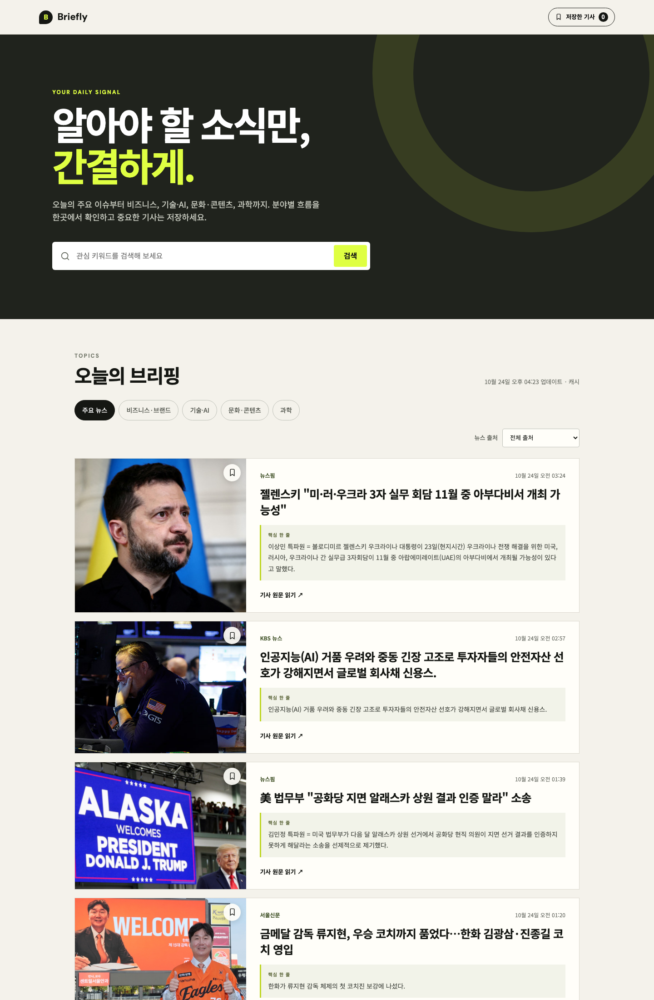
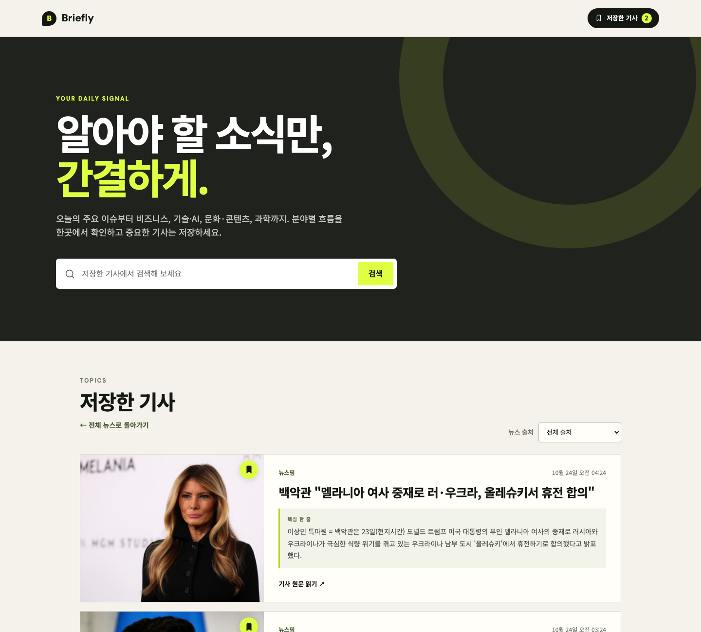
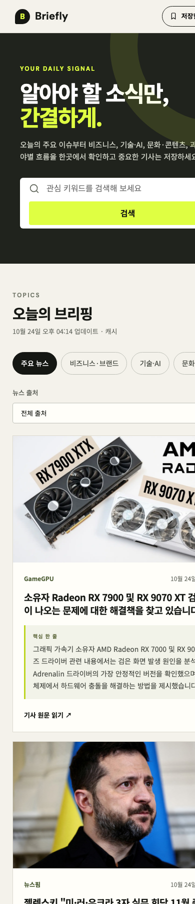

과제 2 개발 보고서
AI와 함께 만들기: Vibe Coding 웹 애플리케이션
1. 앱 소개
1.1 개발 배경과 목적
관심 분야의 최신 뉴스를 확인하려면 여러 뉴스 사이트와 포털을 각각 방문해야 한다. 이 과정에서 관심 없는 정보까지 반복해서 살펴보게 되고, 나중에 다시 읽고 싶은 기사를 체계적으로 보관하기도 어렵다.
Briefly는 사용자가 여러 분야의 주요 뉴스를 한 화면에서 빠르게 탐색하고, 관심 있는 기사를 브라우저에 저장할 수 있도록 만든 뉴스 브리핑 웹 애플리케이션이다. 단순히 기사 링크만 나열하지 않고 기사 설명에서 핵심 문장을 정리한 핵심 한 줄을 함께 제공해 원문을 열기 전에 내용을 파악할 수 있도록 했다.
1.2 주요 사용자
- 주요 사회 이슈와 관심 분야의 뉴스를 짧은 시간에 확인하고 싶은 사용자
- 비즈니스, 기술·AI, 문화·콘텐츠, 과학 분야의 흐름을 살펴보고 싶은 대학원생
- 나중에 읽을 기사를 별도로 저장하고 싶은 사용자
1.3 주요 기능
- 주요 뉴스, 비즈니스·브랜드, 기술·AI, 문화·콘텐츠, 과학의 5개 카테고리 제공
- GNews API를 이용한 한국어 주요 뉴스 조회
- 현재 뉴스의 제목과 설명을 대상으로 한 키워드 검색
- 현재 목록에 포함된 언론사를 자동으로 구성하는 출처 필터
- 기사 설명의 첫 핵심 문장을 정리한
핵심 한 줄
- 기사 북마크 추가·삭제 및 저장 기사 모아보기
- 새로고침 후에도 유지되는 브라우저 저장 기능
- 뉴스 로딩 중, 검색 결과 없음, 데이터 연결 실패 시 사용자 안내 화면 제공
- 데스크톱과 모바일에 대응하는 반응형 화면
2. 주요 화면
2.1 메인 화면과 뉴스 피드

상단에서는 앱의 목적과 검색 기능을 확인할 수 있다. 뉴스 영역에서는 카테고리와 출처를 선택할 수 있고, 각 기사는 왼쪽 이미지와 오른쪽 기사 정보로 구성한 세로형 피드로 제공된다. 카드에는 언론사, 게시 시각, 제목, 핵심 한 줄, 원문 링크가 포함된다.
2.2 저장한 기사 화면

사용자가 기사 카드의 북마크 버튼을 누르면 우측 상단에 저장 개수가 표시된다. 저장한 기사 화면에서는 일반 뉴스 카테고리를 숨기고 저장한 기사만 보여주며, ← 전체 뉴스로 돌아가기 버튼과 저장 기사 전용 검색을 제공한다. 저장 정보는 새로고침 후에도 유지된다.
2.3 모바일 반응형 화면

모바일에서는 뉴스 이미지와 내용을 위아래로 배치한다. 카테고리는 가로로 스크롤할 수 있고, 출처 필터와 뉴스 카드는 화면 너비에 맞춰 표시된다.
3. 웹 애플리케이션 구조와 작동 방식
3.1 사용 기술
| 구분 |
기술 및 역할 |
| 화면 |
HTML, CSS, JavaScript |
| 뉴스 데이터 |
GNews API |
| 서버 기능 |
Vercel Serverless Function |
| 사용자 데이터 |
브라우저 localStorage |
| 버전 관리 |
Git, GitHub |
| 배포 |
Vercel |
| 테스트 |
Node.js 내장 테스트 러너 |
3.2 데이터 흐름
- 사용자가 뉴스 카테고리를 선택한다.
- 브라우저가
/api/news 서버 함수에 뉴스 데이터를 요청한다.
- 서버 함수가 환경 변수에 저장된 API 키로 GNews API를 호출한다.
- 서버는 기사 제목, 설명, 이미지, 출처, 게시 시각을 필요한 형태로 정리한다.
- 브라우저는 받은 데이터를 세로형 뉴스 피드로 표시한다.
- 북마크는 서버가 아닌 사용자 브라우저의 localStorage에 저장한다.
API 키는 프론트엔드 코드에 포함하지 않고 Vercel 환경 변수에서만 사용했다. 또한 같은 카테고리의 반복 요청 결과를 10분 동안 캐시해 API 요청량을 줄였다.
3.3 핵심 한 줄 생성 방식
이번 버전은 별도의 생성형 AI 요약 API를 사용하지 않는다. GNews가 제공하는 기사 설명에서 언론사 머리말과 불필요한 공백을 제거한 뒤 첫 핵심 문장을 추출한다. 이 방식은 추가 비용과 호출 제한 없이 안정적으로 작동하며, 기사 설명에 없는 새로운 내용을 생성하지 않는다는 장점이 있다.
4. AI Coding Agent 활용 과정
개발 전 과정에서 Codex를 활용해 아이디어 비교, 요구사항 정의, 기술 조사, 코드 구현, 오류 진단, 테스트, 배포와 문서화를 진행했다. 단순히 앱 전체를 한 번에 생성하도록 요청하지 않고, 각 단계에서 결과를 직접 확인한 뒤 발견한 문제를 구체적으로 설명하고 수정하도록 요청했다.
4.1 주제 선정과 요구사항 정의
처음에는 일상에서 실제로 사용하면서 구현 난이도가 지나치게 높지 않은 주제를 찾고자 했다. AI에게 전공, 실용성, 구현 난이도, 평가 기준을 고려한 여러 아이디어를 요청했다. 기록형 앱과 정보 제공형 앱을 비교한 뒤 관심 분야의 뉴스를 탐색하고 저장하는 Briefly를 선정했다.
주제 선정 후에는 사용자가 수행할 행동을 기준으로 카테고리 선택, 뉴스 조회, 검색, 북마크, 오류 안내, 모바일 지원을 필수 기능으로 정의했다. 로그인, 댓글, 복잡한 추천 알고리즘은 이번 범위에서 제외했다.
4.2 뉴스 API 조사와 보안 구조 결정
NewsAPI, GNews API, Guardian Open Platform의 공식 문서를 AI와 함께 비교했다. 무료 플랜의 배포 가능 여부, 한국어 지원, 요청 한도, API 키 보안을 검토한 결과 GNews API를 선택했다.
API 키가 브라우저 코드에 노출되지 않도록 Vercel 서버 함수에서 외부 API를 호출하는 구조를 사용했다. 로컬에서는 .env.local, 배포 환경에서는 Vercel 환경 변수에 키를 저장했다.
5. 오류 발견·수정 및 기능 개선 사례
사례 1. 한국어 키워드 검색 결과가 0건으로 표시됨
- 문제 상황: API 연결 후 광고·마케팅 검색 결과가 빈 목록으로 나타났다. 검색어를 단순하게 바꾸어도 Search API가 0건을 반환했다.
- AI 활용: 인증 실패와 검색식 문제를 구분하기 위해 HTTP 상태, 기사 수, 여러 검색어와 다른 API 엔드포인트를 비교하도록 요청했다.
- 해결 과정: 같은 API 키로 Top Headlines API를 호출하자 한국어 기사 10건이 정상 반환됐다. 안정성을 위해 공식 뉴스 카테고리를 사용하고 키워드 검색은 받은 기사 안에서 수행하도록 변경했다.
- 최종 결과: 5개 카테고리에서 한국어 주요 뉴스를 안정적으로 제공하게 됐다.
사례 2. 방송사명이 기사 제목으로 표시됨
- 문제 상황: 일부 KBS 기사의 제목이 실제 기사 제목이 아니라
KBS 뉴스로 표시됐다.
- AI 활용: GNews가 반환한 제목, 출처, 설명을 비교하고 대체 제목 규칙을 만들도록 요청했다.
- 해결 과정: 제목이 출처명과 같거나 방송사명뿐인 경우 기사 설명의 첫 문장을 제목으로 사용하도록 보정 함수를 추가했다.
- 최종 결과: 정상 제목은 유지하면서 부정확한 방송사 기사도 내용을 구분할 수 있게 됐다.
사례 3. 새로고침 후 저장 기사 목록이 비어 보임
- 문제 상황: 북마크 개수는 복원되지만 저장 기사 화면에 카드가 나타나지 않는 경우가 있었다.
- AI 활용: localStorage 복원, 검색 필터, 비동기 요청과 화면 전환 흐름을 점검하도록 요청했다.
- 해결 과정: 이전 검색 조건이 저장 기사에도 적용될 수 있음을 확인했다. 저장 목록 진입 시 검색 상태를 초기화하고 유효한 저장 데이터만 복원하도록 수정했다.
- 최종 결과: 주요 뉴스에서 사라진 기사도 저장 목록에는 계속 유지되고, 새로고침 후에도 정상 표시된다.
사례 4. 저장 기사 화면에서 카테고리 탭을 누르면 필터가 해제됨
- 문제 상황: 저장 기사 화면에서도 일반 뉴스 카테고리가 표시됐고 탭을 누르면 저장 목록이 종료됐다.
- AI 활용: 저장 목록에서 카테고리를 제거하는 방식과 저장 기사 분류 방식을 비교했다.
- 해결 과정: 과거 북마크에는 카테고리 정보가 없으므로 저장 화면에서는 카테고리 탭을 숨겼다. 제목 아래에는
← 전체 뉴스로 돌아가기 버튼을 추가했다.
- 최종 결과: 저장 목록에서 의도하지 않게 일반 뉴스로 전환되지 않고 복귀 동작도 쉽게 찾을 수 있게 됐다.
사례 5. 첫 Vercel 배포에서 HTTP 500 오류 발생
- 문제 상황: Production 배포는 완료됐지만 공개 페이지와 뉴스 API가 모두
FUNCTION_INVOCATION_FAILED 오류를 반환했다.
- AI 활용: 공개 URL의 상태 코드, 오류 본문, Vercel 빌드 로그를 비교하도록 요청했다.
- 해결 과정: Vercel이 브라우저용
app.js를 Node 서버 진입점으로 잘못 감지한 것을 확인했다. 프레임워크 설정을 Other로 고정하고 Node.js 24 런타임을 사용하도록 수정했다.
- 최종 결과: 공개 페이지와 뉴스 API가 모두 HTTP 200을 반환하고 실제 기사도 정상 표시됐다.
사례 6. 앱이 일반적인 뉴스 링크 모음처럼 보임
- 문제 상황: 앱은 뉴스를 간결하게 제공한다고 설명했지만 제목과 원본 설명만 표시해 일반 뉴스 모음과 차이가 부족했다.
- AI 활용: 추가 유료 API 없이 핵심 내용을 빠르게 전달할 방법을 요청했다.
- 해결 과정: 기사 설명의 첫 핵심 문장을 정리해
핵심 한 줄 영역에 표시했다. 초기 3열 카드에서는 내용이 잘려 세로형 뉴스 피드로 다시 설계했다.
- 최종 결과: 사용자는 원문을 열기 전에 기사 핵심을 읽을 수 있고 긴 문장도 잘리지 않게 됐다.
사례 7. 원하지 않는 뉴스 출처가 함께 표시됨
- 문제 상황: GameGPU처럼 사용자에게 익숙하지 않은 출처도 주요 뉴스 목록에 포함됐다.
- AI 활용: 특정 출처를 임의로 삭제하지 않으면서 사용자가 직접 선택할 수 있는 방법을 요청했다.
- 해결 과정: 현재 뉴스 목록에 실제 포함된 언론사명을 수집해 동적인 출처 필터를 만들었다. 이후 사용자 검토에서
GameGPU는 관심 분야와 신뢰 기준에 맞지 않는다는 판단이 있어 서버 데이터 정리 단계의 차단 목록에 추가하고 기존 북마크에서도 제거했다.
- 최종 결과: 사용자는 원하는 언론사의 기사만 선택할 수 있고, GameGPU 기사는 주요 뉴스와 저장 기사에 표시되지 않는다.
사례 8. 모바일 환경에서 화면 레이아웃 오류 발생
- 문제 상황: 모바일 환경에서 웹 앱을 확인한 결과 헤더와 뉴스 카드의 오른쪽 내용이 화면 밖으로 잘리고, 긴 기사 제목과 핵심 문장을 읽기 어려운 문제가 발견됐다.
- AI 활용: 모바일 화면을 점검한 결과를 전달하고, 390px 너비에서도 모든 콘텐츠가 화면 안에 표시되도록 반응형 레이아웃을 수정해 달라고 요청했다.
- 해결 과정: 페이지와 뉴스 그리드의 최대 폭을 화면 너비로 제한하고, 그리드 열과 카드 본문에
min-width: 0을 적용했다. 긴 영문·숫자 조합이 포함된 제목과 핵심 문장도 필요한 위치에서 자동 줄바꿈되도록 보강했다. 수정 후 실제 모바일 기기 조건으로 화면 폭과 문서 폭을 다시 측정했다.
- 최종 결과: 390px 모바일 환경에서 브라우저 폭, 문서 폭, 본문 폭이 모두 동일하게 표시됐으며, 헤더·검색창·필터·뉴스 카드가 화면 밖으로 잘리지 않고 정상적으로 배치됐다.
6. 테스트 및 최종 검증
6.1 자동 테스트
Node.js 내장 테스트 러너로 다음 항목을 검사했다.
- 누락된 기사 설명과 출처의 기본값 처리
- API 키가 없을 때 명확한 설정 오류 반환
- 방송사명이 제목으로 전달된 경우의 제목 보정
- 기사 설명에서 첫 핵심 문장 추출
- 차단한 GameGPU 출처 제외
- 알 수 없는 카테고리가 전달됐을 때 기본 카테고리 처리
최종 자동 테스트 결과는 6개 통과, 0개 실패였다.
6.2 직접 기능 테스트
- 카테고리별 기사 변경 확인
- 키워드 검색 확인
- 출처 필터 확인
- 북마크 추가·삭제와 개수 변경 확인
- 새로고침 후 북마크 유지 확인
- 저장 기사 화면과 전체 뉴스 복귀 확인
- 데스크톱 및 모바일 화면 확인
- 배포 페이지와 API의 HTTP 200 응답 확인
7. 결과와 한계
최종 앱은 실제 웹에 배포됐으며, 별도의 설치 없이 URL로 접속해 핵심 기능을 사용할 수 있다. 뉴스 탐색, 카테고리, 검색, 출처 필터, 핵심 한 줄, 북마크가 정상 작동한다. 개발 과정에서 단순 코드 생성에 그치지 않고 실제 데이터를 연결하고 직접 테스트하면서 발견한 문제를 AI Coding Agent와 단계적으로 수정했다.
현재 북마크는 브라우저 localStorage에 저장하므로 다른 기기나 브라우저와 동기화되지 않는다. 사용자가 브라우저 데이터를 삭제하면 저장 기사도 사라질 수 있다. 또한 핵심 한 줄은 생성형 AI 요약이 아니라 제공된 기사 설명의 첫 핵심 문장을 정리한 결과다. 향후에는 로그인과 데이터베이스를 추가해 북마크를 동기화하거나, 비용과 저작권·정확성 문제를 검토한 뒤 AI 요약 기능을 확장할 수 있다.
8. 제출 정보